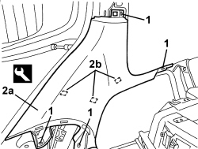

7040H68 TAI GATE HOUSING PILLAR TRIM (ONE), LH OR RH - R.R.
- Path
- Procedures > 70 FITTINGS > 7040 BODY INTERIOR FITTINGS AND TRIM > 7040H ROOF PANEL AND PILLARS LINING > 7040H68 TAI GATE HOUSING PILLAR TRIM (ONE), LH OR RH - R.R.
- Kind
- repair procedure (removal / refitting; the operation number is the code)
- Applies to
- all engines; all production periods; only with equipment: Station Wagon
- Interactive page
- https://sloeber94.github.io/elrnDB/#/939005457
Applies to: all engines; all production periods; only with equipment: Station Wagon
 Removing
Removing
 Refitting
RefittingOp. 7040H12 ROOF REAR TRIM - R.R.
Op. 7040G40 LOAD COMPARTMENT LIGHT BULB HOLDER - R R
Op. 7040B22 LUGGAGE COMPARTMENT/LOAD PLATFORM MOULDING - R+R
Op. 7040B04 SIDE MOULDING (ONE) LH OR RH FOR LUGGAGE COMPARTMENT - R.R.
Op. 7040B10 LOAD PLATFORM (LUGGAGE PLATFORM) TRIM - R+R
Op. 7040B18 LOAD COMPARTMENT LOAD PLATFORM SIDE TRIM ONE LH OR RH - R.R
Op. 7040B30 L/H OR R/H SIDE SUPPORT (ONE) FOR LOAD PLATFORM COVER BLIND - ARRANGE
Op. 7040H42 REAR PILLAR TRIM (ONE), LEFT OR RIGHT- R.R
1. Undo the bolts.
2. Remove the tailgate housing pillar trim (2a) releasing the inner retainers (2b) using the special tool.
Tool | Description | Function | Validity |
|---|---|---|---|
1823015000 | Knife | Retainer removal |

Applies to: all engines; all production periods; only with equipment: Station Wagon
Refitting
Removing- Check that the tailgate housing pillar cover is not damaged.
- Position the tailgate housing pillar cover and attach the inner retainers.
- Tighten the bolts.
Op. 7040H42 REAR PILLAR TRIM (ONE), LEFT OR RIGHT- R.R
Op. 7040B30 L/H OR R/H SIDE SUPPORT (ONE) FOR LOAD PLATFORM COVER BLIND - ARRANGE
Op. 7040B18 LOAD COMPARTMENT LOAD PLATFORM SIDE TRIM ONE LH OR RH - R.R
Op. 7040B10 LOAD PLATFORM (LUGGAGE PLATFORM) TRIM - R+R
Op. 7040B04 SIDE MOULDING (ONE) LH OR RH FOR LUGGAGE COMPARTMENT - R.R.
Op. 7040B22 LUGGAGE COMPARTMENT/LOAD PLATFORM MOULDING - R+R
Topics linked from this page (8)
- 7040B04 SIDE MOULDING (ONE) LH OR RH FOR LUGGAGE COMPARTMENT - R.R.
- 7040B10 LOAD PLATFORM (LUGGAGE PLATFORM) TRIM - R+R
- 7040B18 LOAD COMPARTMENT LOAD PLATFORM SIDE TRIM ONE LH OR RH - R.R
- 7040B22 LUGGAGE COMPARTMENT/LOAD PLATFORM MOULDING - R+R
- 7040B30 L/H OR R/H SIDE SUPPORT (ONE) FOR LOAD PLATFORM COVER BLIND - ARRANGE
- 7040G40 LOAD COMPARTMENT LIGHT BULB HOLDER - R R
- 7040H12 ROOF REAR TRIM - R.R.
- 7040H42 REAR PILLAR TRIM (ONE), LEFT OR RIGHT- R.R
Topics that link to this page (7)
- 5505B55 TAIL-GATE WIRING - R R
- 5580C50 WINDOW BAG MODULE (ONE) LH OR RH - R.R
- 7015A14 TAILGATE - ADJUST CENTRING AND PROFILE - INCLUDES HINGE AND COMPARTMENT SEAL ADAPTATION
- 7015A24 TAILGATE HINGES - REPAIR OR REPLACE WITH TAILGATE REMOVED
- 7035C14 FIXED REAR SIDE WINDOW (ONE) LEFT OR RIGHT - R.R INCLUDES CLEANING HOUSING
- 7040H10 ROOF PANEL LINING - R.R.
- 7040H16 ROOF PANEL LINING FOR VERSIONS WITH SUN ROOF - R.R